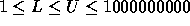
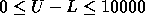

| Divisors |
Mathematicians love all sorts of odd properties of numbers. For instance, they consider 945 to be an interesting number, since it is the first odd number for which the sum of its divisors is larger than the number itself.
To help them search for interesting numbers, you are to write a program that scans a range of numbers and determines the number that has the largest number of divisors in the range. Unfortunately, the size of the numbers, and the size of the range is such that a too simple-minded approach may take too much time to run. So make sure that your algorithm is clever enough to cope with the largest possible range in just a few seconds.
The first line of input specifies the number N of ranges, and each of the N following lines contains a range, consisting of a lower bound L and an upper bound U, where L and U are included in the range. L and U are chosen such that  and  .
For each range, find the number P which has the largest number of divisors (if several numbers tie for first place, select the lowest), and the number of positive divisors D of P (where P is included as a divisor). Print the text 'Between L and H, P has a maximum of D divisors.', where L, H, P, and D are the numbers as defined above.
3 1 10 1000 1000 999999900 1000000000
Between 1 and 10, 6 has a maximum of 4 divisors. Between 1000 and 1000, 1000 has a maximum of 16 divisors. Between 999999900 and 1000000000, 999999924 has a maximum of 192 divisors.